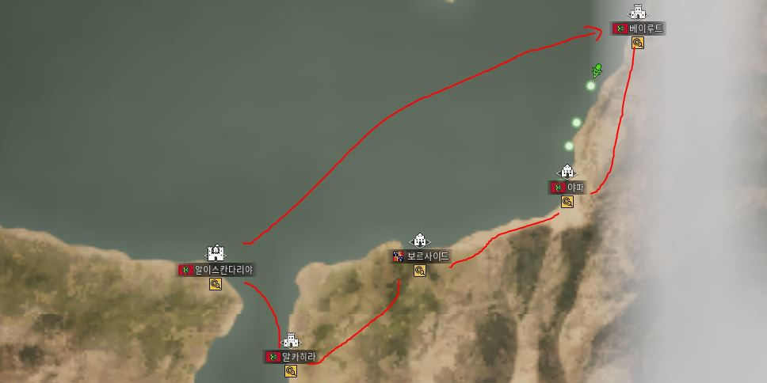
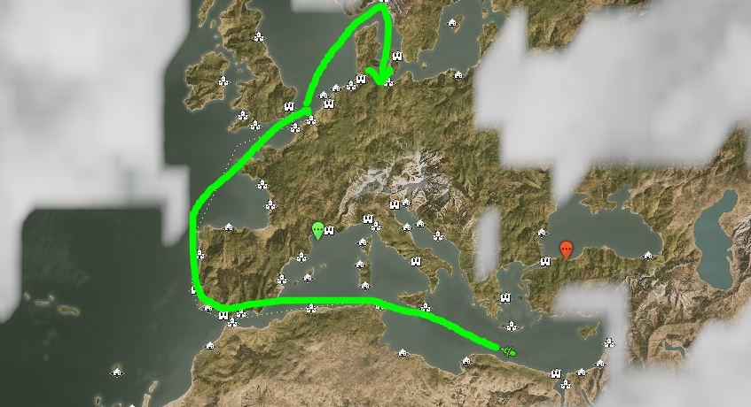
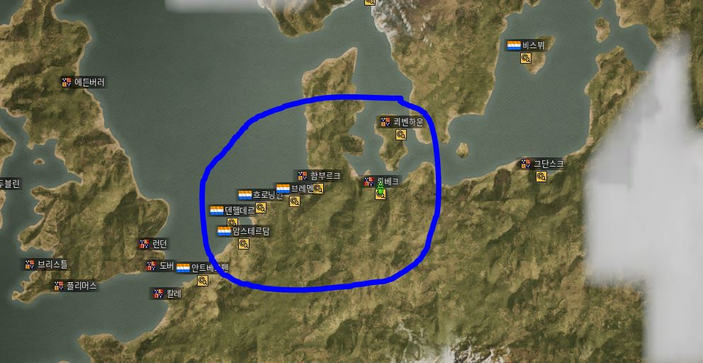

개요
아시는 바처럼 30레벨부터는 본격적으로 관세가 적용됩니다.현재 받고 있는 관세 버프 -30%가 모두 종료되기 때문인데요.
이로 인해서 자국땅이 없는 에스파냐, 네덜란드, 포르투칼의 경우
최소한의 관세를 내기 위해 반드시 매각항을 마련해야 합니다.
이에 현재 우리 상회 AraES님께서 보유하고 계신 "보르사이드"항을
베이스를 활용하고 생강공원님의 정보를 기준으로 짠 루트입니다.
루트 장점
기본적으로 루트가 매우 간결합니다.
매우 낮은 관세가 적용되어 있습니다.
매입 방법 (시벳/향수/수선화)

알이스칸다리아->알카히라->보르사이드->아퍄->베이루트순이고 향신료(술탄/바투타) 구매량 증가가 있으면 좋습니다.
최대한 향수/시벳/수선화만으로 선창을 채웁니다.
가능하면 의뢰퀘를 하며 시간을 보내는게 좋으나, 빠르게 하고 싶다면 아티나, 칸디아에서 대리석을 구매합니다.
가는 지역이 위험하지 않기 때문에 선원을 최소로 줄이고, 선창을 늘립니다
보통 2회 사이클이 가능한데, 시간을 때우겠다고 하시는 분은 알이스칸다리아 조합에서 퀘를 하세요
* 막히면 야파 제외 모든 교역소는 7분 갭으로 리셋됩니다.
구매 소요 시간
구매 시작: 11시 45분 / 구매 완료: 12시 4분
약 20분 소요
매각 방법
판매처리 뤼베크까지 위험지역이 없기 때문에 최소 선원을 유지합니다.
알이스칸다리아에서 뤼베크 직항 (세비야 쯤 보충하거나, 선원 버림)
24일정도 나오는데, 식량/물 12%정도로 나와서 선원 33명 빼고 다 버리면 됩니다. (11일 맞추고 선원 버리기)
저 같은 경우는 항해사 고용을 위해 안트베르펜을 경유했습니다.
(안트까지 14일소요 | 24 * 90 / 60 = 36분 소요)

매각 결과
모입 시간 20여분을 포함해 총 56분정도 소요되었고, 풀적재가 아니였음에도 220만 이상의 순수익 가능합니다.

하행
아래 파란 원 내에서 비싼 상품을 사서 보르사이드 혹은 제노바에서 판매
